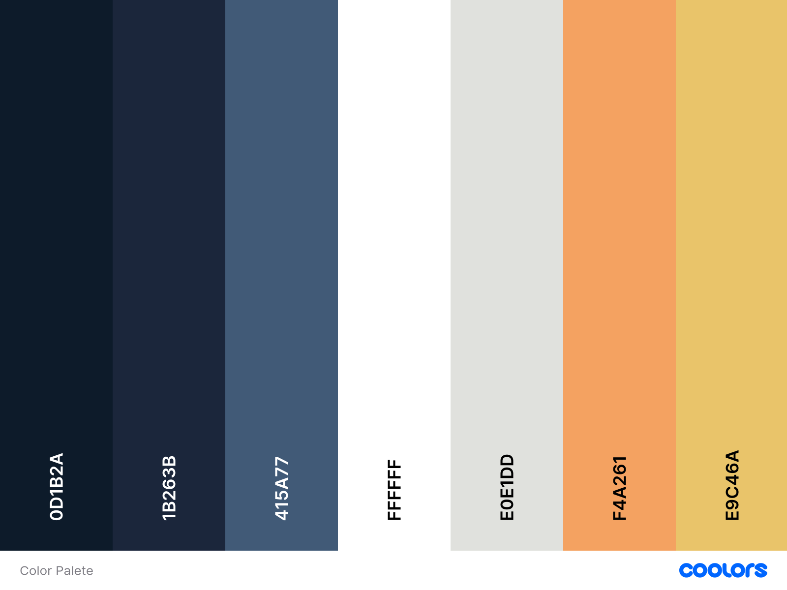

Overview
Site Name:
Toloju - Transformación Digital Local
Site Purpose:
Toloju is committed to helping small businesses in Quilpué and surrounding areas embrace the digital world. Whether it's revamping an old website, managing hosting with the provider of choice, or building a new online presence from scratch, Toloju makes the process accessible and worry-free. We also offer ongoing webmaster support, frequent content updates, and real-time Power BI dashboards hosted securely online.
Site Goals:
- Goal 1: Assist small businesses in modernizing their websites, creating new designs, and ensuring mobile-friendly, responsive layouts.
- Goal 2: Offer reliable website hosting or manage existing hosting from the client's preferred provider.
- Goal 3: Maintain active webmaster support to keep websites fresh, updated, and secure.
- Goal 4: Develop and host custom Power BI dashboards that provide real-time analytics accessible from any device.
Scenarios:
“I have an old website but don’t know how to update it. Can someone help me fix it without losing my content?”
“My business uses Power BI but I need to access my dashboards online and share them easily. Can you help with that?”
“How do I start my online presence if I have never had a website or social media for my store?”
User Personas
Traditional Business Owner
Raúl owns a corner grocery store in Quilpué. He has never had a website but wants to appear in Google search results and share updates with his community. He needs help creating a simple, manageable website and learning the basics of online promotion.
Freelancer with Tech Needs
Camila is a freelance accountant who already uses Power BI for internal reporting but wants to create clean, interactive dashboards for her clients. She’s looking for a way to host them online and ensure private access 24/7.
Busy Entrepreneur
Esteban owns a bakery and already has a website, but it hasn’t been updated in years. He wants to redesign it and assign a webmaster to maintain it with new products, promotions, and seasonal images.
Graphical Elements
Logo:
Color Palette:
Typography:
Primary Font:
Raleway, sans-serif. Used for headings and titles to create a modern, clean look that stands out.
Secondary Font:
Noto Sans, sans-serif. Used for body text to ensure readability and accessibility across devices.
Wireframes:
The wireframes outline a clean, modern design with clear calls to action, focusing on services, benefits, and accessibility.
-
Home Page: Introduction, key services, testimonials, and call
to action.
- Services Page: Detailed description of each service including hosting, redesign, webmaster, Power BI dashboards, etc.
- Contact Page: Contact form, WhatsApp button, location, and FAQ.